Материалы и оборудования для трубопроводного транспорта
Заказать оборудование и материалы, получить полные консультации вы можете у специалистов ООО «АнКорИнжиниринг»; +7 908 276 52 05; ankorr.ru@gmail.com
Отгрузка оборудования осуществляется по РФ надежными перевозчиками со страхованием груза.
|
Устройства для сварки 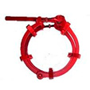 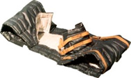 |
|
Центратор звенный ЦЗН Центратор звенный наружный ЦЗН применяется для центровки (выравнивания) торцов труб при сварочном процессе, в базовых и трассовых условиях. Центраторы звенные имеют конструкцию цепи и состоят из звеньев (1), соединенных между собой втулками (2) и опорно-центрирующими роликами (3). Для замыкании центратора в кольцо используется накидной крюк (4). Затяжка центратора осуществляется воротком (5) за счет винта (6). Основные технические характеристики: Маркировка Диаметр центрируемых труб, мм ЦЗН-51 57 ЦЗН-81 89 ЦЗН-111 108-114 ЦЗН-151 159-168 ЦЗН-221 219 ЦЗН-227 273 ЦЗН-321 325 ЦЗН-371 377 ЦЗН-421 426 ЦЗН-531 530 ЦЗН-631 630 ЦЗН-721 720 ЦЗН-821 820 ЦЗН-1021 1020 ЦЗН-1221 1220 ЦЗН-1421 1420 По желанию заказчика центраторы ЦЗН могут быть изготовлены для любого диаметра трубопровода. |
|
Центратор эксцентриковый ЦНЭ Центратор наружный эксцентриковый ЦНЭ применяется для центровки (выравнивания) торцов труб диаметром до 426 мм включительно. Центратор состоит из двух или трёх дуг с опорными элементами и эксцентрикового зажима. Основным преимуществом центраторов ЦНЭ является их использование для труб нескольких диаметров, благодаря возможности смещения осей (регулированию эксцентриситета).
Основные технические характеристики: Маркировка Диаметр центрируемых труб, мм ЦНЭ 8-15 89-159 ЦНЭ 16-21 168-219 ЦНЭ 27-32 273-325 ЦНЭ 37-42 377-426 |
|
Термоизолирующий пояс ТП Термоизолирующий пояс ТП применяется для режимного охлаждения сварного шва. При сварочном процессе в отрицательном интервале температур и резком охлаждении горячего металла возможно коробление, в результате чего повышается хрупкость металла, что может привести к появлению трещин и других дефектов в сварном стыке. По окончании сварки, шов накрывают термоизолирующим поясом и закрепляют его завязками на трубопроводе, что обеспечивает более равномерное остывание сварного стыка.
Термопояс изолирующий ТП изготовлен из огнестойкой кремнеземной ткани и негорючего утеплителя, пояс ТП рассчитан на максимальную температуру нагрева 1100 ⁰С.
Маркировка термоизолирующего пояса ТП соответствует диаметру трубопровода.
Основные технические характеристики ТП: Маркировка Диаметр трубопровода, мм Длина, мм Ширина, мм ТЗП-168 159-168 650 300 ТЗП-219 219 800 300 ТЗП-273 273 1000 300 ТЗП-325 325 1250 300 ТЗП-377 377 1400 300 ТЗП-426 426 1500 300 ТЗП-530 530 1850 300 ТЗП-630 630 2200 300 ТЗП-720 720 2500 300 ТЗП-820 820 2800 300 ТЗП-1020 1020 3450 300 ТЗП-1220 1220 4050 300 ТЗП-1420 1420 4700 300 ТЗП-1720 1720 5650 300 По желанию заказчика термопояса ТП могут быть изготовлены для любого диаметра трубопровода, а также различной ширины и толщины.
|
|
Термозащитный пояс ТЗП Термозащитный пояс ТЗП применяется для защиты изоляции трубопровода при сварочном процессе от брызг расплавленного металла.
Термопояс ТЗП также используется в случаях использовании подогревателей стыков труб и при вырезке дефектного участка трубопровода.
Термопояс защитный изготовлен из огнестойкой кремнеземной ткани и рассчитан на максимальную температуру нагрева 1100 ⁰С.
Маркировка термозащитного пояса ТЗП соответствует диаметру трубопровода.
Основные технические характеристики ТЗП: Маркировка Диаметр трубопровода, мм Длина, мм Ширина, мм ТЗП-114 108-114 450 300 ТЗП-168 159-168 600 300 ТЗП-219 219 800 300 ТЗП-273 273 950 300 ТЗП-325 325 1150 300 ТЗП-377 377 1350 300 ТЗП-426 426 1450 300 ТЗП-530 530 1800 300 ТЗП-630 630 2100 300 ТЗП-720 720 2400 300 ТЗП-820 820 2750 300 ТЗП-1020 1020 3400 300 ТЗП-1220 1220 4000 300 ТЗП-1420 1420 4650 300 ТЗП-1720 1720 5600 300 По желанию заказчика термопояса ТЗП могут быть изготовлены для любого диаметра трубопровода, а также различной ширины и толщины. |
|
Материалы для изоляции 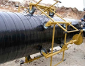 |
|
Лента полимерно-битумная ЛИТКОР Лента ЛИТКОР применяется в качестве антикоррозионного защитного слоя стальных трубопроводов методом «холодного нанесения» при условиях эксплуатации от – 20 °С до 40 °С.
Лента ЛИТКОР представляет собой двухслойную конструкцию, состоящую из полиэтиленового или поливинилхлоридного слоя основы и полимерно-битумного мастичного слоя адгезива.
Лента ЛИТКОР выпускается следующих марок:
— летняя лента ЛИТКОР-Л для нанесения на трубопровод при температуре окружающего воздуха от плюс 5 °С до плюс 40 °С;
— зимняя лента ЛИТКОР-З для нанесения на трубопровод при температуре от минус 20 °С до плюс 10 °С.
Основные технические характеристики ленты ЛИТКОР: Температура хрупкости мастичного слоя ЛИАМ–Л, °С не более -5 Температура хрупкости мастичного слоя ЛИАМ–З, °С не более -20 Адгезия ЛИАМ–Л к загрунтованной стальной поверхности при температуре 20 °С, Н/см, не менее 10 Адгезия ЛИАМ–З к загрунтованной стальной поверхности при температуре 20 °С, Н/см, не менее 15 Адгезия в нахлесте ленты к ленте при 20 °С, Н/см, не менее 7 Лента полимерно-битумная ЛИТКОР изготавливается в соответствии с ТУ 2245-001-48312016-01, ТУ 2245-00355857963-2006, ТУ 2245-010-09355006-2014. |
|
Манжеты термоусаживающиеся Манжета термоусаживающаяся типа Тиал-М, Терма-СТ, Терма-СТМП, Новорад-СТ, Донрад-МСТ применяется для защиты от коррозии зоны сварного стыка, при условиях эксплуатации от – 40 до 60 ⁰С, кратковременно до 80 ⁰С, в базовых и трассовых условиях. Монтаж манжет осуществляется при температуре нагрева поверхности трубопровода 60 — 90 ⁰С в зависимости от температуры окружающей среды.
В состав манжеты термоусаживающейся входит: мерный отрезок термоусаживающейся двухслойной ленты и замковая пластина.
Лента термоусаживающаяся представляет собой термостабилизированную химически-модифицированную полиэтиленовую основу с нанесенным на нее термоплавким адгезивом.
Основные технические характеристики: Показатель Значение Прочность при разрыве при 20 °С, МПа не менее 12 Относительное удлинение при разрыве при 20 °С, % не менее 200 Адгезия к стали при 20 °С, Н/см не менее 70 Степень полной усадки в продольном направлении, % не менее 20 Степень полной усадки в поперечном направлении, % не более 10 Замковая пластина представляет собой также полиэтиленовую основу с адгезивом, слой которого армирован тугоплавкой сеткой. С помощью пластины образуется неразъемное кольцевое соединение, что не допускает размыкания ленты при усадке манжеты.
Характеристики замковой пластины: Показатель Значение Адгезия заводскому покрытия и манжете при 20 °С, Н/см не менее 50 Степень полной усадки в продольном направлении, % не менее 5 Степень полной усадки в поперечном направлении, % не более 2 Стандартная ширина манжеты 450 мм и толщина 1,2 — 2,4 мм, по желанию заказчика манжеты термоусаживающиеся могут быть изготовлены шириной 500 мм и 650 мм с различным соотношением толщины. |
|
Лента термоусаживающаяся Лента термоусаживающаяся типа Тиал-Л, Терма, Донрад-СТ применяется для защиты от коррозии зон сварных стыков, тройников, отводов и других фасонных частей трубопровода диаметром до 1420 мм включительно с заводским полиэтиленовым покрытием, при условиях эксплуатации от – 40 до 60 ⁰С, кратковременно до 80 ⁰С, в базовых и трассовых условиях. Монтаж ленты осуществляется спиральной намоткой с предварительным натяжением при температуре нагрева поверхности трубопровода до 140 ⁰С.
Лента также может быть использована в следующих направлениях:
в качестве изоляции стальной трубы методом спиральной намотки при проведении переизоляционных работ в трассовых условиях; в качестве ремонтного материала мест повреждения заводского полиэтиленового покрытия или покрытия на основе термоусаживающихся лент. Лента термоусаживающаяся имеет двухслойную конструкцию и представляет собой термостабилизированный химически-модифицированный полиэтиленовый слой основы и термоплавкий адгезионный слой.
Основные технические характеристики: Показатель Значение Прочность при разрыве при 20 °С, МПа не менее 12 Относительное удлинение при разрыве при 20 °С, % не менее 200 Адгезия к стали при 20 °С, Н/см не менее 70 Степень полной усадки в продольном направлении, % не менее 20 Степень полной усадки в поперечном направлении, % не более 10 Стандартная ширина ленты 450 мм и толщина 1,2 — 2,4 мм, по желанию заказчика лента термоусаживающаяся может быть изготовлена шириной 500 мм и 650 мм с различным соотношением толщины, отгружаться в рулонах и мерными отрезками любой длины. |
|
Лента ПОЛИЛЕН 40-ЛИ-63 Лента полиэтиленовая ПОЛИЛЕН применяется в качестве внутреннего слоя антикоррозионной защиты стальных трубопроводов методом «холодного нанесения» совместно с праймером НК-50 и наружной защитной оберткой ПОЛИЛЕН–ОБ при условиях эксплуатации от – 60 °С до 40 °С.
Лента ПОЛИЛЕН-ЛИ представляет собой многослойную конструкцию, состоящую из полиэтиленовой основы и модифицированного бутилкаучука адгезива.
Основные технические характеристики: Показатель Значение Прочность при разрыве при 20 °С, МПа не менее 12,0 Относительное удлинение при разрыве при 20 °С, % не менее 200 Адгезия к загрунтованной стальной поверхности при 20 °С, Н/см не менее 15 Стандартная ширина ленты 450 мм и толщина 0,6 мм, по желанию заказчика лента ПОЛИЛЕН может отгружаться толщиной 0,4 мм и шириной 225 мм, 150 мм.
Лента полиэтиленовая ПОЛИЛЕН 40-ЛИ-63 изготавливается в соответствии с ТУ 2245-003-1297859-99, ТУ 2245-008-09355006-2013. |
|
Обертка ПОЛИЛЕН 40-ОБ-63 Обертка полиэтиленовая ПОЛИЛЕН применяется в качестве наружного слоя антикоррозионной защиты стальных трубопроводов методом «холодного нанесения» совместно с праймером НК-50 и лентой ПОЛИЛЕН–ЛИ при условиях эксплуатации от – 60 °С до 40 °С.
Обертка ПОЛИЛЕН-ОБ представляет собой многослойную конструкцию, состоящую из полиэтиленовой основы и бутилкаучукового адгезива.
Основные технические характеристики: Показатель Значение Прочность при разрыве при 20 °С ⁰С, МПа не менее 12,0 Относительное удлинение при разрыве при 20 °С, % не менее 200 Адгезия к изоляционной ленте при 20 °С, Н/см не менее 5 Стандартная ширина ленты 450 мм и толщина 0,6 мм, по желанию заказчика обертка ПОЛИЛЕН может отгружаться шириной 225 мм, 150 мм.
Обертка полиэтиленовая ПОЛИЛЕН 40-ОБ-63 изготавливается в соответствии с ТУ 2245-004-1297858-99, ТУ 2245-009-09355006-2013. |
|
Праймер НК-50 Праймер НК-50 применяется в конструкциях антикоррозионной защиты стальных трубопроводов методом «холодного нанесения» совместно с лентой ПОЛИЛЕН–ЛИ и оберткой ПОЛИЛЕН-ОБ при условиях эксплуатации от – 60 °С до 40 °С.
Праймер НК-50 представляет собой каучуково-смоляную наполненную композицию, растворенную в бензине.
Основные технические характеристики праймера НК-50: Показатель Значение Плотность, г/см3 0,8 Время высыхания, мин 15 Адгезия к стальной поверхности при 20 °С, Н/см не менее 15 Праймер НК-50 изготавливается в соответствии с ТУ 5775-001-1297858-95, ТУ 2313-007-09355006-2013. |
|
Лента ПВХ-Л Лента липкая ПВХ-Л применяется в качестве самостоятельной антикоррозионной защиты стальных трубопроводов методом «холодного нанесения» и также может применятся совместно с полимерно-битумными и полимерно-асмольными лентами в качестве защитной обертки при условиях эксплуатации от – 30 °С до 30 °С.
Лента ПВХ-Л представляет собой двухслойную конструкцию, состоящую из ПВХ основы и адгезива.
Основные технические характеристики ленты ПВХ-Л: Показатель Значение Прочность при разрыве, Н/см не менее 50 Относительное удлинение при разрыве, % не менее 80 Температура хрупкости, ⁰С не более -30 Адгезия к стальной поверхности при 20 °С, Н/см не менее 5 Лента липкая ПВХ-Л изготавливается в соответствии с ТУ 2245-001-00203312-2003. |
|
Лента ЛИАМ Лента полимерно-асмольная ЛИАМ применяется в качестве антикоррозионной защиты стальных трубопроводов методом «холодного нанесения» совместно с асмольной грунтовкой при условиях эксплуатации от – 40 °С до 50 °С.
Лента ЛИАМ представляет собой двухслойную конструкцию, состоящую из полиэтиленовой основы и мастичного адгезива на основе мастичной композиции «Асмол».
Лента ЛИАМ выпускается следующих марок:
летняя лента ЛИАМ–Л для нанесения на трубопровод при температуре окружающего воздуха от плюс 5 °С до плюс 30 °С; зимняя лента ЛИАМ–З для нанесения на трубопровод при температуре от минус 20 °С до плюс 10 °С. Основные технические характеристики ленты ЛИАМ: Показатель Значение Температура хрупкости мастичного слоя ЛИАМ–Л, °С не более -30 Температура хрупкости мастичного слоя ЛИАМ–З, °С не более -40 Гибкость ленты при температуре ЛИАМ–Л, °С 0 Гибкость ленты при температуре ЛИАМ–З, °С -20 Адгезия к загрунтованной стальной поверхности при 20 °С, Н/см не менее 20 Лента полимерно-асмольная ЛИАМ изготавливается в соответствии с ТУ 2245-023-16802026-2000 . |
|
Грунтовка асмольная Грунтовка асмольная применяется в качестве защитного покрытия стальных трубопроводов методом «холодного нанесения» совместно с лентой полимерно-асмольная ЛИАМ при условиях эксплуатации от – 40 °С до 50 °С.
Основные технические характеристики грунтовки асмольной: Показатель Значение Плотность, г/см3 0,8 Укрывистость при 20 °С, г/м2 25 Грунтовка асмольная изготавливается в соответствии с ТУ 2312-021-16802026-2000. |
|
Устройства для переходов 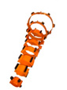 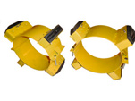 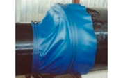 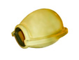 |
|
Кольца «Спейсер» Кольца опорные диэлектрические «Спейсер» применяются при прокладке трубопровода через различные преграды (автомобильные и железные дороги, реки, другие трубопроводы) при условиях эксплуатации от – 40 °С до 60 °С.
Использование колец предохранительных «Спейсер» при прокладке в защитном кожухе-футляре обеспечивает выполнение одновременно следующих функций:
— сохранение целостности изоляции, сварных стыков и всей наружной поверхности протаскиваемого трубопровода, за счет истирающихся опорных элементов повышенной износостойкости;
— диэлектрическая изоляция между прокладываемым трубопроводом и защитным футляром за счет полностью полимерной конструкции сегментов;
— легкость протаскивания в футляре за счет низкого коэффициента трения используемого материала;
— равномерное распределение нагрузки и возможность подвижек рабочего трубопровода внутри футляра в процессе эксплуатации за счет жесткого закрепления колец на одинаковом расстоянии.
Кольцо предохранительное диэлектрическое «Спейсер» состоит из нескольких сегментов, размеры и их количество определяется диаметром трубопровода, соединенных между собой болтовыми соединениями.
Основные технические характеристики: Показатель Значение Коэффициент трения по стали 0,3 Температура хрупкости, °С не более -100 Диэлектрическая проницаемость при частоте 10⁶ Гц, не более 2,4 Электрическая прочность (при толщине образца 1 мм), кВ/мм, не менее 40 По желанию заказчика опорные кольца диэлектрические «Спейсер» могут быть изготовлены для любого диаметра трубопровода, а также с различной высотой опорных элементов для точного центрирования рабочего трубопровода в футляре.
Кольца опорные диэлектрические предохранительные «Спейсер» изготавливаются в соответствии с ТУ 51-19-2000, ТУ 2291-034-00203803-2005, ТУ 2291-034-00203803-2011 . |
|
Кольца ОНК Кольца опорно-направляющие ОНК применяются при протаскивании магистральных трубопроводов в защитных футлярах через препятствия (автомобильные и железные дороги, реки, другие трубопроводы) при условиях эксплуатации от – 40 °С до 60 °С.
Применение опорно-направляющих колец ОНК обеспечивает:
— защиту наружной изоляции протаскиваемого трубопровода; — диэлектрическое отделение рабочего трубопровода от кожуха-футляра; — скольжение трубопровода при протаскивании в футляре; — проектное позиционирование рабочего трубопровода внутри защитного футляра.
Кольцо опорно-направляющее ОНК имеет сегментную стальную конструкцию с диэлектрическими опорными вставками. Сегменты между собой соединяются болтовыми соединениями.
Основные технические характеристики: Показатель Значение Количество сегментов в кольце диаметром 57-325 мм, шт. 2 Количество сегментов в кольце диаметром 377-1420 мм, шт. 3 Коэффициент трения опор по стали 0,3 Предел прочности опор при температурах от – 40 °С до + 60 °С, кг/см2, не менее 120 Диэлектрическая проницаемость опор при частоте 10⁶ Гц, не более 2,4 Удельное объемное сопротивление, Ом/см, не менее 10 По желанию заказчика кольца опорно-направляющие ОНК могут быть изготовлены на любой диаметр трубопровода, а также с различной высотой опор и их количеством.
Кольца опорно-направляющие ОНК изготавливаются в соответствии с ТУ-1469-001-01297858-98. |
|
Кольца роликовые ОНК-Р Кольца опорно-направляющие роликовые ОНК применяются при протаскивании магистральных трубопроводов в защитных футлярах с длиной более 200 м через препятствия (автомобильные и железные дороги, реки, другие трубопроводы) при условиях эксплуатации от – 40 °С до 60 °С.
Применение роликовых опорно-направляющих колец ОНК-Р обеспечивает:
— защиту наружной изоляции протаскиваемого трубопровода; — диэлектрическое отделение рабочего трубопровода от кожуха-футляра; — качение трубопровода при протаскивании в футляре; — проектное позиционирование рабочего трубопровода внутри защитного футляра.
Кольцо опорно-направляющее роликовое ОНК-Р имеет сегментную стальную конструкцию с диэлектрическими роликовыми опорами. Сегменты между собой соединяются болтовыми соединениями.
Основные технические характеристики: Показатель Значение Количество сегментов в кольце диаметром 57-325 мм, шт. 2 Количество сегментов в кольце диаметром 377-1420 мм, шт. 3 Количество роликов в опоре кольца диаметром 57-168 мм, шт. 1 Количество роликов в опоре кольца диаметром 219-530 мм, шт. 2 Количество роликов в опоре кольца диаметром 630-1420 мм, шт. 4 Предел прочности опор при температурах от – 40 °С до + 60 °С, кг/см2, не менее 120 Диэлектрическая проницаемость опор при частоте 10⁶ Гц, не более 2,4 Удельное объемное сопротивление, Ом/см, не менее 10 По желанию заказчика кольца опорно-направляющие роликовые ОНК-Р могут быть изготовлены на любой диаметр трубопровода, а также с различной высотой опор и их количеством.
Кольца опорно-направляющие ОНК изготавливаются в соответствии с ТУ-1469-001-01297858-98 |
|
Кольца ПМТД тип 1 Аббревиатура ПМТД — переход магистрального трубопровода под автомобильными и железными дорогами, прокладываемый в защитном кожухе (футляре).
Кольца опорно-направляющие ПМТД тип 1 применяются на переходах магистральных трубопроводов под инженерными сооружениями в защитных футлярах, при условиях эксплуатации от – 40 °С до 60 °С.
Прокладка трубопровода с использованием опорно-направляющих колец ПМТД обеспечивает следующее:
— сохранение наружного изоляционного покрытия трубопровода; — электроизоляцию рабочего трубопровода в защитном футляре; — беспрепятственное скольжение трубопровода в футляре;
— точное расположение протаскиваемого трубопровода в защитном кожухе на проектных отметках с равномерным распределением давления.
Опорно-направляющие кольца ПМТД состоят из металлических сегментов (секторов), на каждом из которых установлены опоры скольжения. Секторы собираются в кольцо болтовыми соединениями.
Основные технические характеристики: Показатель Значение Количество сегментов в кольце диаметром 57-325 мм, шт. 2 Количество сегментов в кольце диаметром 377-1420 мм, шт. 3 Коэффициент трения опор по стали 0,3 Предел прочности опор при температурах от – 40 °С до + 60 °С, кг/см2, не менее 120 Диэлектрическая проницаемость опор при частоте 10⁶ Гц, не более 2,4 Удельное объемное сопротивление, Ом/см, не менее 10 По желанию заказчика кольца опорно-направляющие ПМТД могут быть изготовлены для различных наружных диаметров трубопровода, а также с различными размерами опор скольжения.
Кольцо опорно-направляющее ПМТД тип 1 изготавливаются в соответствии с ТУ 1469-001-53597015-01, ТУ 1469-001-53597015-12. |
|
Кольца роликовые ПМТД тип 2 Аббревиатура ПМТД — переход магистрального трубопровода под автомобильными и железными дорогами, прокладываемый в защитном кожухе (футляре). Кольца опорно-направляющие роликовые ПМТД тип 2 применяются на переходах магистральных трубопроводов под инженерными сооружениями в защитных футлярах с длиной более 200 метров, при условиях эксплуатации от – 40 °С до 60 °С.
Прокладка трубопровода с использованием роликовых опорно-направляющих колец ПМТД-Р обеспечивает следующее:
— сохранение наружного изоляционного покрытия трубопровода; — электроизоляцию рабочего трубопровода в защитном футляре; — беспрепятственное качение трубопровода в футляре;
— точное расположение протаскиваемого трубопровода в защитном кожухе на проектных отметках с равномерным распределением давления.
Опорно-направляющие кольца ПМТД-Р тип 2 состоят из металлических сегментов (секторов), на каждом из которых установлены опоры качения. Секторы собираются в кольцо болтовыми соединениями.
Основные технические характеристики: Показатель Значение Количество сегментов в кольце диаметром 57-325 мм, шт. 2 Количество сегментов в кольце диаметром 377-1420 мм, шт. 3 Количество роликов в опоре кольца диаметром 57-168 мм, шт. 1 Количество роликов в опоре кольца диаметром 219-530 мм, шт. 2 Количество роликов в опоре кольца диаметром 630-1420 мм, шт. 4 Предел прочности опор при температурах от – 40 °С до + 60 °С, кг/см2, не менее 120 Диэлектрическая проницаемость опор при частоте 10⁶ Гц, не более 2,4 Удельное объемное сопротивление, Ом/см, не менее 10 По желанию заказчика кольца опорно-направляющие роликовые ПМТД-Р могут быть изготовлены для различных наружных диаметров трубопровода, а также с различным количеством опор качения.
Кольцо опорно-направляющее ПМТД тип 2 изготавливаются в соответствии с ТУ 1469-001-53597015-01, ТУ 1469-001-53597015-12. |
|
Устройство опорное УОЗР Устройства опорные защитные роликовые УОЗР применяются в основном при прокладке трубопровода методом горизонтально-направленного бурения ГНБ с длиной защитного футляра больше 200 метров при условиях эксплуатации от – 40 °С до 60 °С.
Использование устройств опорные защитные роликовых УОЗР необходимо в следующих случаях:
— защита от повреждений изоляционного покрытия трубопровода при протаскивании в кожухе-футляре; — диэлектрический барьер между рабочим трубопроводом и защитным футляром;
— прокладка трубопровода в футляре с длиной футляра более 200 метров, где не эффективно использование аналогичных устройств с опорами скольжения;
— распределение общего веса рабочего трубопровода равномерно внутри защитного футляра.
Устройство УОЗР имеет конструкцию из двух и трех сегментов с роликовыми опорами. Сегменты друг с другом соединяются болтами.
Основные технические характеристики: Показатель Значение Количество сегментов в устройстве диаметром 57-325 мм, шт. 2 Количество сегментов в устройстве диаметром 377-1420 мм, шт. 3 Количество роликов в опоре устройства диаметром 57-168 мм, шт. 1 Количество роликов в опоре устройства диаметром 219-530 мм, шт. 2 Количество роликов в опоре устройства диаметром 630-1420 мм, шт. 4 Предел прочности опор при температурах от – 40 °С до + 60 °С, кг/см2, не менее 120 Диэлектрическая проницаемость опор при частоте 10⁶ Гц, не более 2,4 Удельное объемное сопротивление, Ом/см, не менее 10 По желанию заказчика устройства опорные защитные роликовые УОЗР могут быть изготовлены под любой диаметр рабочего трубопровода с различным количеством опор.
Устройство опорное защитное роликовое УОЗР изготавливаются в соответствии с ТУ 4834-004-48505838-2006. |
|
Манжеты резинотканевые МГ Манжеты герметизирующие резинотканевые МГ применяются для герметизации торцов переходов магистральных трубопроводов под инженерными сооружениями в защитных футлярах, при условиях эксплуатации от – 40 °С до 60 °С.
Использование резинотканевых манжет для герметизации торцевой полости между кожухом и рабочим трубопроводом обеспечивает отсутствие влаги, грунтовых вод, грунта в межтрубном пространстве.
За счет исполнения из маслобензостойкого армированного материала эксплуатация манжет возможна в сложных условиях.
Конструктивно герметизирующие манжеты имеют два типа: тип 1 гофрированные и тип 2 конусные.
Манжеты герметизирующие тип 1 представляют собой гофрированную прямую конструкцию из резины без армирования. Манжеты при монтаже фиксируются на трубопроводе и защитном футляре хомутами-стяжками.
Манжеты герметизирующие тип 2 представляют собой усеченный конус с эксцентриситетом из резины армированной тканью повышенной прочности. Манжеты при монтаже фиксируются на трубопроводе и защитном футляре хомутами-стяжками. Конусные манжеты производятся двух видов:
— манжеты неразъемные применяются при строительстве новых трубопроводов;
— манжеты разъемные (маркировка с добавлением буквы Р) применяются при ремонтах действующих трубопроводов; разъемные манжеты в трассовых условиях приводят в неразъемный вид с помощью комплекта для склейки.
Основные технические характеристики: Типоразмер манжеты Диаметр трубопровода, мм Диаметр защитного кожуха, мм 57/219 57 219 57/273 57 273 89/219 89 219 89/273 89 273 89/325 89 325 114/273 114 273 114/325 114 325 159/325 159 325 159/377 159 377 159/426 159 426 159/530 159 530 219/377 219 377 219/426 219 426 219/530 219 530 273/426 273 426 273/530 273 530 325/530 325 530 325/630 325 630 377/530 377 530 377/630 377 630 377/720 377 720 426/630 426 630 426/720 426 720 530/720 530 720 530/820 530 820 630/820 630 820 720/1020 720 1020 720/1220 720 1220 820/1020 820 1020 820/1220 820 1220 1020/1220 1020 1220 1020/1420 1020 1420 1220/1420 1220 1420 1420/1720 1420 1720 По желанию заказчика манжеты герметизирующие могут быть изготовлены для различных наружных диаметров трубопровода и футляра, а также с любым сочетанием этих диаметров.
Манжеты герметизирующие МГ изготавливаются в соответствии с ТУ 2531-005-0127858-2000, ТУ 2531-007-01297858-02. |
|
Манжеты ГМНР, ГМР, МГП Манжеты для герметизации МГП, ГМНР, ГМР применяются для герметизации торцевого пространства между трубопроводом и футляром на переходах через препятствия, при условиях эксплуатации от – 40 °С до 60 °С.
Герметизация обеспечивается за счет плотного прилегания манжеты к наружной поверхности трубопровода и защитного. Манжета изготовлена из полимерно-тканевого материала с покрытием из ПВХ в виде усеченного конуса, при монтаже она плотно обжимается металлическими хомутами-стяжками, благодаря этому создается надежный барьер для проникновения влаги и грунта в межтрубное пространство. Конусные герметизирующие манжеты производятся двух видов:
— герметизирующие манжеты неразъемные МГП, ГМНР: используются при прокладке новых трубопроводов;
— герметизирующие манжеты разъемные ГМР: используются при ремонтах существующих трубопроводов; разъемные манжеты в трассовых условиях соединяют в неразъемный конус с помощью комплекта для склейки. Основные технические характеристики: Типоразмер манжеты Диаметр трубопровода, мм Диаметр защитного кожуха, мм 57/219 57 219 57/273 57 273 89/219 89 219 89/273 89 273 89/325 89 325 114/273 114 273 114/325 114 325 159/325 159 325 159/377 159 377 159/426 159 426 159/530 159 530 273/426 273 426 273/530 273 530 325/530 325 530 325/630 325 630 377/530 377 530 377/630 377 630 377/720 377 720 426/630 426 630 426/720 426 720 530/720 530 720 530/820 530 820 630/820 630 820 720/1020 720 1020 720/1220 720 1220 820/1020 820 1020 820/1220 820 1220 1020/1220 1020 1220 1020/1420 1020 1420 1220/1420 1220 1420 1420/1720 1420 1720 По желанию заказчика манжеты герметизирующие могут быть изготовлены для различных наружных диаметров трубопровода и футляра, а также с любым сочетанием этих диаметров.
Манжеты герметизирующие МГП, ГМНР, ГМР изготавливаются в соответствии с ТУ 2531-005-0127858-2000, ТУ 2531-007-01297858-02. |
|
Манжеты резиновые ПМТД, ПМТД-Р Аббревиатура ПМТД — переход магистрального трубопровода под автомобильными и железными дорогами, прокладываемый в защитном кожухе (футляре). Манжеты резиновые ПМТД применяются для защиты и гидроизоляции межтрубного пространства переходов магистральных трубопроводов под инженерными сооружениями, при условиях эксплуатации от – 40 °С до 60 °С.
Манжеты конусные резиновые ПМТД представляют собой изделия формы усеченного конуса, устанавливаемые на трубопровод и торцы защитного футляра, в местах установки они обжимаются металлическими хомутами.
Изготавливают манжеты из резины с маслобензостойким покрытием. По типу исполнения конусные манжеты могут быть нормальной (маркировка с буквой Н) и повышенной прочности (маркировка с буквой П).
Классифицируются резиновые манжеты ПМТД по двум видам:
— манжета конусная резиновая неразъёмная ПМТД применяется при строительстве новых трубопроводов;
— манжета конусная резиновая разъёмная ПМТД-Р применяется при ремонтных, профилактических и аварийных работах на переходах действующих трубопроводов; соединение разреза в трассовых условиях осуществляют с помощью комплекта для склейки.
Основные технические характеристики: Типоразмер манжеты Диаметр трубопровода, мм Диаметр защитного кожуха, мм 57/219 57 219 57/273 57 273 89/219 89 219 89/273 89 273 89/325 89 325 114/273 114 273 114/325 114 325 159/325 159 325 159/377 159 377 159/426 159 426 159/530 530 530 219/377 219 377 219/426 219 426 219/530 219 530 273/426 273 426 273/530 273 530 325/530 325 530 325/630 325 630 377/530 377 530 377/630 377 630 377/720 377 720 426/630 426 630 426/720 426 720 530/720 530 720 530/820 530 820 630/820 630 820 720/1020 720 1020 720/1220 720 1220 820/1020 820 1020 820/1220 820 1220 1020/1220 1020 1220 1020/1420 1020 1420 1220/1420 1220 1420 1420/1720 1420 1720 По желанию заказчика манжеты герметизирующие резиновые могут быть изготовлены для различных наружных диаметров трубопроводов и футляров, а также с любым сочетанием этих диаметров.
Манжеты резиновые ПМТД, ПМТД-Р изготавливаются в соответствии с ТУ 2531-002-53-597015-01, ТУ 2531-002-53-597015-12. |
|
Устройство защитное УЗМП Устройства для защиты межтрубного пространства УЗМП применяется для герметизации межтрубного пространства между защитным футляром и трубопроводом переходов под автомобильными и железными дорогами, а также другими инженерными сооружениями, при условиях эксплуатации от – 40 °С до 60 °С.
Использование устройств УЗМП обеспечивает надежную защиту от попадания влаги (воды) и грунта в межтрубное пространство.
Основные технические характеристики: Типоразмер манжеты Диаметр трубопровода, мм Диаметр защитного кожуха, мм 57/219 57 219 57/273 57 273 89/219 89 219 89/273 89 273 89/325 89 325 114/273 114 273 114/325 114 325 159/325 159 325 159/377 159 377 159/426 159 426 159/530 159 530 219/377 219 377 219/426 219 426 219/530 219 530 273/426 273 426 273/530 273 530 325/530 325 530 325/630 325 630 377/530 377 530 377/630 377 630 377/720 377 720 426/630 426 630 426/720 426 720 530/720 530 720 530/820 530 820 630/820 630 820 720/1020 720 1020 720/1220 720 1220 820/1020 820 1020 820/1220 820 1220 1020/1220 1020 1220 1020/1420 1020 1420 1220/1420 1220 1420 1420/1720 1420 1720 По желанию заказчика устройства защиты УЗМП могут быть изготовлены для различных наружных диаметров трубопровода и футляра, а также с любым сочетанием этих диаметров . Устройства защитные межтрубного пространства УЗМП изготавливаются в соответствии с ТУ 4834-007-48505838-2010. |
|
Укрытия защитные УЗМГ Укрытия защитные манжеты герметизирующей УЗМГ применяются для защиты от механических повреждений герметизирующих манжет переходов магистральных трубопроводов через препятствия, при условиях эксплуатации от – 40 °С до 60 °С.
Применение укрытий защитных УЗМГ обеспечивает:
— надежную защиту манжеты герметизирующей при обратной засыпке любым грунтом; — исключение давления на герметизирующую манжету в засыпанной траншее;
— защиту герметизирующей манжеты от атмосферных осадков и ультрафиолета в местах выхода перехода трубопровода на поверхность земли;
— возможность свободной деформации манжеты при изменении температурных условий; — ремонтопригодность при профилактических и аварийных работах на переходах действующих трубопроводов.
Защитное укрытие УЗМГ представляет собой разъемный корпус, состоящий из двух сегментов с уплотнителем в местах соприкосновения с трубопроводом и защитным футляром.
Полукорпуса устанавливаются поверх смонтированной герметизирующей манжеты, полностью ее накрывая, и соединяются между собой болтовыми соединениями. Укрытия манжет герметизирующих изготавливают из стеклопластика.
Основные технические характеристики: Типоразмер укрытия Диаметр трубопровода, мм Диаметр защитного кожуха, мм 57/219 57 219 57/273 57 273 89/219 89 219 89/273 89 273 89/325 89 325 114/273 114 273 114/325 114 325 159/325 159 325 159/377 159 377 159/426 159 426 159/530 159 530 219/377 219 377 219/426 219 426 219/530 219 530 273/426 273 426 273/530 273 530 325/530 325 530 325/630 325 630 377/530 377 530 377/630 377 630 377/720 377 720 426/630 426 630 426/720 426 720 530/720 530 720 530/820 530 820 630/820 630 820 720/1020 720 1020 720/1220 720 1220 820/1020 820 1020 820/1220 820 1220 1020/1220 1020 1220 1020/1420 1020 1420 1420/1720 1420 1720 По желанию заказчика защитные укрытия манжет герметизирующих могут быть изготовлены для различных наружных диаметров трубопроводов и футляров, а также с любым сочетанием этих диаметров.
Укрытия защитные манжеты герметизирующей УЗМГ изготавливаются в соответствии с ТУ 2296-009-01297858-2005, ТУ 2296-006-99173846-2009. |
|
Защитные укрытия ЗУМП Защитные укрытия манжет переходов трубопроводов ЗУМП применяются для механической защиты манжет переходов трубопроводов через препятствия, при условиях эксплуатации от – 40 °С до 60 °С.
Применение защитных укрытий ЗУМП обеспечивает следующее:
— сохранение целостности герметизирующей манжеты при обратной засыпке траншеи; — защиту от давления грунта на манжету при эксплуатации;
— антивандальную защиту герметизирующей манжеты, а также защиту от ультрафиолетовых лучей и атмосферных осадков в месте частичного или полного выхода торца перехода из земли;
— свободное изменение геометрических размеров манжеты с изменением температурных условий эксплуатации; — возможность свободного доступа при ремонте, профилактике или аварии на переходах.
Защитное укрытие ЗУМП представляет собой разборный двухсегментный конусообразный кожух из стеклопластика. Сегменты кожуха устанавливаются снаружи герметизирующей манжеты и соединяются между собой болтовыми соединениями. Уплотнитель, имеющийся на каждом сегменте, обеспечивает плотное прилегание сегментов друг к другу и к поверхностям рабочего трубопровода и защитного футляра.
Основные технические характеристики: Типоразмер укрытия Диаметр трубопровода, мм Диаметр защитного кожуха, мм 57/219 57 219 57/273 57 273 89/219 89 219 89/273 89 273 89/325 89 325 114/273 114 273 114/325 114 325 159/325 159 325 159/377 159 377 159/426 159 426 159/530 159 530 219/377 219 377 219/426 219 426 219/530 219 530 273/426 273 426 273/530 273 530 325/530 325 530 325/630 325 630 377/530 377 530 377/630 377 630 377/720 377 720 426/630 426 630 426/720 426 720 530/720 530 720 530/820 530 820 630/820 630 820 720/1020 720 1020 720/1220 720 1220 820/1020 820 1020 820/1220 820 1220 1020/1220 1020 1220 1020/1420 1020 1420 1220/1420 1220 1420 1420/1720 1420 1720 По желанию заказчика защитные укрытия манжет могут быть изготовлены для различных наружных диаметров трубопроводов и футляров, а также с любым сочетанием этих диаметров.
Защитные укрытия манжет ЗУМП изготавливаются в соответствии с ТУ 2296-219-35197364-2003. |
|
Укрытия У-ПМТД-С Аббревиатура ПМТД — переход магистрального трубопровода под автомобильными и железными дорогами, прокладываемый в защитном кожухе (футляре).
Укрытия резиновых манжет стеклопластиковые У-ПМТД-С применяются для защиты манжет переходов магистральных трубопроводов, при условиях эксплуатации от – 40 °С до 60 °С.
Применение укрытий резиновых манжет У-ПМТД-С обеспечивает выполнение следующего:
— обратное засыпание траншеи грунтом со скальными включениями без потери целостности герметизирующей манжеты;
— отсутствие влияния давления засыпанного грунта на манжету в процессе эксплуатации;
— защиту от несанкционированных повреждений герметизирующей манжеты при ее выходе из траншеи, а также защиту от ультрафиолета и осадков;
— беспрепятственная деформация манжеты при возможных подвижках трубопровода относительно защитного футляра в процессе эксплуатации;
— возможность установки на эксплуатируемые или ремонтируемые переходы.
Укрытие резиновых манжет У-ПМТД-С представляет собой разъемный кожух из двух сегментов. Сегменты кожуха изготовлены из стеклопластика и имеют уплотнитель, соединяются они друг с другом метизами через монтажные отверстия. Устанавливается укрытие сверху на резиновую манжету, полностью закрывая ее.
Основные технические характеристики: Типоразмер укрытия Диаметр трубопровода, мм Диаметр защитного кожуха, мм 57/219 57 219 57/273 57 273 89/219 89 219 89/273 89 273 89/325 89 325 114/273 114 273 114/325 114 325 159/325 159 325 159/377 159 377 159/426 159 426 159/530 159 530 219/377 219 377 219/426 219 426 219/530 219 530 273/426 273 426 273/530 273 530 325/530 325 530 325/630 325 630 377/530 377 530 377/630 377 630 377/720 377 720 426/630 426 630 426/720 426 720 530/720 530 720 530/820 530 820 630/820 630 820 720/1020 720 1020 720/1220 720 1220 820/1020 820 1020 820/1220 820 1220 1020/1220 1020 1220 1020/1420 1020 1420 1420/1720 1420 1720 По желанию заказчика защитные укрытия резиновых манжет могут быть изготовлены для различных наружных диаметров трубопроводов и футляров, а также с любым сочетанием этих диаметров.
Укрытия резиновых манжет У-ПМТД-С изготавливаются в соответствии с ТУ 5959-003-53597015-03, ТУ 5959-003-53597015-12. |
|
Устройства для защиты изоляции
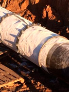
|
|
Рейка футеровочная полимерная, профиль типа ФП, Нефтегаз Рейка футеровочная полимерная, профиль полимерный футеровочный (футеровочный профиль) типа ФП, профиль типа Нефтегаз применяется для выполнения следующих функций:
— уплотнение за счет заполнения пространства между кольцевым утяжелителем и трубопроводом, что обеспечивает надежную фиксацию балластирующих устройств;
— полную защиту наружного изоляционного покрытия в процессе установки и эксплуатации кольцевых утяжелителей за счет обкладки всей поверхности трубопровода;
— сохранение целостности изоляционного покрытия при прокладке трубопровода методом протаскивания или сплава на переходах через водные преграды с использованием кольцевых балластирующих устройств.
Рейка футеровочная полимерная представляет собой полимерный профиль прямоугольного сечения различной длины, выполненный полностью из полимерного материала.
Крепление скального листа на трубопроводе осуществляется полимерной лентой с проволочными стяжками и проволокой для исключения смещения.
Полимерный профиль может иметь отверстия в поперечном направлении для соединения реек в мат (полотно в сборе), что обеспечивает сохранение целостности крепежа внутри полотна.
Основные технические характеристики: Высота рейки (профиля), мм Ширина рейки (профиля), мм Длина рейки (профиля), мм 30 60 1000; 2000 45 60 1000; 2000 Рейка футеровочная полимерная, профиль полимерный футеровочный типа ФП, Нефтегаз изготавливается в соответствии с ТУ 2290-002-54892207-2006.
По желанию заказчика рейка полимерная может быть изготовлена для любой длины. |
|
Рейка древесно-полимерная Рейка футеровочная древесно-полимерная применяется для выполнения следующих функций:
— защита изоляционного покрытия на переходах трубопровода через препятствия в защитных футлярах от случайного повреждения при протаскивании;
— уплотнительный и защитный элемент при установке и эксплуатации кольцевых утяжелителей;
— защита изоляции при прокладке трубопровода методом протаскивания или сплава на переходах через водные преграды с использованием кольцевых балластирующих устройств.
Рейка древесно-полимерная представляет собой высушенное деревянное погонажное изделие прямоугольного сечения, наружная поверхность которого покрыта слоем полимерного материала.
Крепление древесно-полимерной рейки на трубопроводе осуществляется полимерной лентой с проволочными стяжками и проволокой.
Основные технические характеристики: Высота рейки (профиля), мм Ширина рейки (профиля), мм Длина рейки, мм 30 30; 60; 90; 120 30; 60; 90; 120 45 60; 90; 120 1000; 2000; 3000 60 60; 90; 120 1000; 2000; 3000 По желанию заказчика рейка древесно-полимерная может быть изготовлена для любых размеров.
Рейка футеровочная древесно-полимерная изготавливается в соответствии с ТУ 5380-201-60705250-2009. |
|
Скальный лист СЛ Скальный лист СЛ применяется для защиты наружного изоляционного покрытия трубопровода в следующих случаях:
— при обратной засыпке трубопровода мерзлым грунтом или грунтом со скальными включениями;
— при подвижках трубопровода в процессе эксплуатации от внешнего воздействия скальных пород грунта;
— на переходах трубопровода через препятствия в защитных футлярах от случайного повреждения при протаскивании;
— при выходе трубопровода на поверхность земли от атмосферных осадков, ультрафиолета и несанкционированного повреждения;
— при прокладке трубопровода методом протаскивания или сплава на переходах через водные преграды;
— при транспортировке и монтажных работах на трубопроводе от случайного повреждения.
Скальный лист представляет собой листовой материал одно- или двухслойный, в зависимости от необходимой толщины, выполненный из нетканого синтетического материала, пропитанного карбамида-формальдегидной смолой.
Крепление скального листа на трубопроводе осуществляется полимерной лентой с проволочными стяжками и проволокой для исключения смещения.
Основные технические характеристики: Маркировка Диаметр трубопровода, мм Длина сегмента, мм Ширина сегмента, мм Количество сегментов, шт. СЛ-219 219 2400 800 1 СЛ-273 273 2400 1000 1 СЛ-325 325 2400 1200 1 СЛ-377 377 2400 1350 1 СЛ-426 426 2400 1500 1 СЛ-530 530 2400 1900 1 СЛ-720 720 2400 2500 1 СЛ-820 820 2400 2800 1 СЛ-1020 1020 2400 1700 2 СЛ-1220 1220 2400 2000 2 СЛ-1420 1420 2400 2350 2 По желанию заказчика скальный лист может быть изготовлен для любых размеров. Скальный лист СЛ изготавливается в соответствии с ТУ 4834-004-17179339-2003, ТУ 8397-019-01297858-2006. |
|
Скальный лист полимерный СЛП, СЛД Скальный лист полимерный СЛП, скальный лист дублированный СЛД применяется для защиты наружного изоляционного покрытия трубопровода в следующих случаях:
— при обратной засыпке трубопровода мерзлым грунтом или грунтом со скальными включениями;
— при подвижках трубопровода в процессе эксплуатации от внешнего воздействия скальных пород грунта;
— на переходах трубопровода через препятствия в защитных футлярах от случайного повреждения при протаскивании;
— при выходе трубопровода на поверхность земли от атмосферных осадков, ультрафиолета и несанкционированного повреждения;
— при прокладке трубопровода методом протаскивания или сплава на переходах через водные преграды.
Скальный лист полимерный (дублированный) представляет собой листовой материал, выполненный из нетканого синтетического материала с нанесенным на него полимерным слоем различной толщины.
Крепление скального листа на трубопроводе осуществляется полимерной лентой с проволочными стяжками и проволокой для исключения смещения.
Основные технические характеристики: Маркировка Диаметр трубопровода, мм Длина сегмента, мм Ширина сегмента, мм Количество сегментов, шт. СЛП-219, СЛД-219 219 2400 800 1 СЛП-273, СЛД-273 273 2400 1000 1 СЛП-325, СЛД-325 325 2400 1200 1 СЛП-377, СЛД-377 377 2400 1350 1 СЛП-426, СЛД-426 426 2400 1500 1 СЛП-530, СЛД-530 530 2400 1900 1 СЛП-720, СЛД-720 720 2400 2500 1 СЛП-820, СЛД-820 820 2400 2800 1 СЛП-1020, СЛД-1020 1020 2400 1700 2 СЛП-1220, СЛД-1220 1220 2400 2000 2 СЛП-1420, СЛД-1420 1420 2400 2350 2 По желанию заказчика скальный лист может быть изготовлен для любых размеров. Скальный лист полимерный СЛП, скальный лист дублированный СЛД изготавливается в соответствии с ТУ 8397-005-13368693-2006, ТУ 2246-004-56755147-2006. |
|
Защитный коврик ЗК, мат футеровочный МФ Защитный коврик ЗК, мат футеровочный МФ применяется для защиты наружного изоляционного покрытия трубопровода в процессе установки и эксплуатации бетонных утяжелителей охватывающего типа УБО, УБОм, БУОТ, УБП.
Защитный коврик ЗК и мат футеровочный МФ представляют собой однослойное или двухслойное текстильное изделие, в зависимости от необходимой толщины, прямоугольной формы, выполненное из нетканого синтетического материала. Конструкция мата может иметь по краям многослойные подушки, обеспечивающие дополнительную защиту изоляционного покрытия трубопровода в местах непосредственного контакта с железобетонными утяжелителями.
Основные технические характеристики: Маркировка Диаметр трубопровода, мм Длина изделия, мм Ширина изделия, мм ЗК-273, МФ-273 (для УБП-0,3) 273 1700 600 ЗК-325, МФ-325 (для УБП-0,3) 325 1700 800 ЗК-377, МФ-377 (для УБП-0,4) 377 1700 900 ЗК-426, МФ-426 (для УБП-0,4) 426 1700 1000 ЗК-426, МФ-426 (для УБП-0,5) 426 1200 1000 ЗК-530, МФ-530 (для УБП-0,5) 530 1200 1400 ЗК-720, МФ-720 (для УБО, УБОм, БУОТ) 720 1700 1900 ЗК-820, МФ-820 (для УБО, УБОм, БУОТ) 820 1700 2000 ЗК-1020, МФ-1020 (для УБО, УБОм, БУОТ) 1020 1700 2200 ЗК-1220, МФ-1220 (для УБО, УБОм, БУОТ) 1220 1500 2400 ЗК-1420, МФ-1420 (для УБО, УБОм, БУОТ) 1420 1400 2600 Защитные коврики ЗК, маты футеровочные МФ изготавливаются в соответствии с ТУ 102-300-81, ТУ 51-31323949-88-2002. |
|
Уплотнительный коврик УК-СЛ-УТК, УК-СЛ-УЧК Уплотнительный коврик из скального листа для железобетонных и чугунных кольцевых утяжелителей УК-СЛ-УТК, УК-СЛ-УЧК применяется для плотного позиционирования утяжелителей на трубопроводе, а также его защиты наружного изоляционного покрытия в процессе установки и эксплуатации.
Уплотнительный коврик УК-СЛ-УТК, УК-СЛ-УЧК представляет собой один или два сегмента из скального листа прямоугольной формы с многослойными опорными элементами, обеспечивающими центрирование на трубопроводе и плотное прилегание утяжелителя.
Основные технические характеристики: Маркировка Диаметр трубопровода, мм Длина сегмента, мм Ширина сегмента, мм Количество сегментов, шт. УК-СЛ-УТК-325 325 1200 1100 1 УК-СЛ-УТК-377 377 1200 1200 1 УК-СЛ-УТК-426 426 1200 1350 1 УК-СЛ-УТК-530 530 1200 1750 1 УК-СЛ-УТК-720 720 2400 1150 2 УК-СЛ-УТК-820 820 2400 1300 2 УК-СЛ-УТК-1020 1020 2400 1600 2 УК-СЛ-УТК-1220 1220 2400 1900 2 УК-СЛ-УТК-1420 1420 2400 2250 2 УК-СЛ-УЧК-159 159 500 500 1 УК-СЛ-УЧК-219 219 600 700 1 УК-СЛ-УЧК-273 273 600 900 1 УК-СЛ-УЧК-325 325 600 1100 1 УК-СЛ-УЧК-377 377 650 1200 1 УК-СЛ-УЧК-426 426 650 1350 1 УК-СЛ-УЧК-530 530 700 1750 1 УК-СЛ-УЧК-720 720 1200 1150 2 УК-СЛ-УЧК-820 820 1100 1300 2 УК-СЛ-УЧК-1020 1020 1000 1600 2 УК-СЛ-УЧК-1220 1220 1100 1900 2 УК-СЛ-УЧК-1420 1420 1000 2250 2 Уплотнительные коврики из скального листа для железобетонных и чугунных кольцевых утяжелителей УК-СЛ-УТК, УК-СЛ-УЧК изготавливаются в соответствии с ТУ 8397-019-01297858-2006. |
|
Опоры трубопроводов 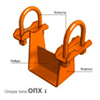 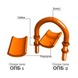 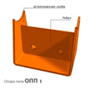 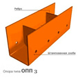 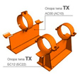 |
|
Опоры по ОСТ 36-146-88 Опоры трубопроводов тавровые приварные типа ТП. Опоры трубопроводов тавровые хомутовые типа ТХ. Опоры трубопроводов корпусные приварные типа КП. Опоры трубопроводов корпусные хомутовые типа КХ Опоры трубопроводов хомутовые бескорпусные типа ХБ-А. Опоры трубопроводов хомутовые бескорпусные типа ХБ-Б. Опоры трубопроводов трубчатые крутоизогнутых отводов типа ТО. Опоры трубопроводов трубчатые типа ТР. Опоры трубопроводов уголковые приварные типа УП. поры трубопроводов вертикальные приварные типа ВП. Опоры трубопроводов катковые направляющие типа КН. |
|
Опоры по ОСТ 36-94-83 (ГОСТ 14911-82) Опоры трубопроводов подвижные приварные типа ОПП1. Опоры трубопроводов подвижные приварные типа ОПП2. Опоры трубопроводов подвижные приварные типа ОПП3. Опоры трубопроводов подвижные хомутовые типа ОПХ1. Опоры трубопроводов подвижные хомутовые типа ОПХ2. Опоры трубопроводов подвижные бескорпусные типа ОПБ1. Опоры трубопроводов подвижные бескорпусные типа ОПБ2 с направляющим хомутом. |
|
Опоры серии 4,903-10 Опоры трубопроводов неподвижные хомутовые типа Т3. Опоры трубопроводов неподвижные лобовые двухупорные типа Т4. Опоры трубопроводов неподвижные лобовые четырёхупорные типа Т5. Опоры трубопроводов неподвижные лобовые двухупорные усиленные типа Т6. Опоры трубопроводов неподвижные лобовые четырехупорные усиленные типа Т7. Опоры трубопроводов неподвижные хомутовые бескорпусные типа Т11. Опоры трубопроводов неподвижные хомутовые типа Т12. Опоры трубопроводов неподвижные бугельные типа Т44. Опоры трубопроводов подвижные скользящие типа Т13. Опоры трубопроводов подвижные скользящие типа Т14. Опоры трубопроводов подвижные скользящие типа Т15. Опоры трубопроводов подвижные скользящие диэлектрические тип Т16. Опоры трубопроводов подвижные скользящие диэлектрические тип Т17. |
|
Подвески по ГОСТ 16127-78 Подвески для горизонтальных трубопроводов:
ПГ – подвеска с 1 тягой, регулируемая гайкой. ПТ – подвеска с 1 тягой, регулируемая талрепом. ПГ2ш – подвеска с 2 тягами, регулируемыми гайками, и опорной балкой из швеллеров. ПТ2ш – подвеска с 2 тягами, регулируемыми талрепами, и опорной балкой из швеллеров. ПГ2у – подвеска с 2 тягами, регулируемыми гайками, и опорной балкой из угловой стали. ПТ2у — подвеска с 2 тягами, регулируемыми талрепами, и опорной балкой из угловой стали.
Подвески для вертикальных трубопроводов:
ПГВ – подвеска с 2 тягами, регулируемыми гайками. ПТВ – подвеска с 2 тягами, регулируемыми талрепами . |
|
Опоры по другим сериям Производство опор трубопроводов по другим типовым сериям:
— опоры трубопроводов в ППУ изоляции серии 313 ТС-008; — опоры трубопроводов подвижные серии 5.900-7 выпуски 1-4; — опоры трубопроводов неподвижные серии 5.903-13 выпуск 7-95; — опоры трубопроводов подвижные серии 5.903-13 выпуск 8-95; — опоры трубопроводов серии 5.905-18.05; — опоры трубопроводов серии 5.908-2. |
|
Устройства проивоэррозионные 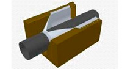 |
|
Полотенце противоэрозионное ПП Полотенце противоэрозионное ПП применяется для создания защиты от вымывания (сползания) грунта из траншеи при прокладке трубопровода на уклонах.
Противоэрозионное полотенце представляет собой текстильное изделие из нетканого синтетического материала в виде воронки (ловушки) с канатом для закрепления на трубопроводе и анкерами для крепления на берме траншеи.
Основные технические характеристики: Маркировка Длина, мм Ширина, мм ПП-325 3600 5000 ПП-426 3600 5000 ПП-530 3600 6000 ПП-720 4800 7000 ПП-820 4800 7000 ПП-1020 6000 8000 ПП-1220 6000 9000 ПП-1420 7200 11000 По желанию заказчика противоэрозионные полотенца могут быть изготовлены под различные размеры траншеи и углы наклона.
Полотенца противоэрозионные ПП изготавливаются в соответствии с ТУ 85 0113-020-01297858-99, ТУ 850113-005-17179339-2004. |
|
Контейнер противоэрозионный КП, КП-Р Контейнер текстильный противоэрозионный КП, КП-Р (ромбического типа) применяются для защиты от водной эрозии береговых участков подхода трубопровода к подводному переходу, а также создания временных дамб, обеспечивающих технологический доступ в период строительства и эксплуатации.
Контейнер противоэрозионный КП, КП-Р представляет собой емкость из высокопрочной и долговечной технической ткани различного объема, наполняемая минеральным грунтом. Контейнер имеет горловину для засыпки и грузовые петли для монтажа.
Основные технические характеристики: Маркировка Масса в воздухе, тн КП-0,05, КП-Р-0,05 0,05 КП-0,1, КП-Р-0,1 0,09 КП-0,2, КП-Р-0,2 0,22 КП-0,4, КП-Р-0,4 0,42 КП-0,8, КП-Р-0,8 0,75 КП-1,8, КП-Р-1,8 1,75 КП-2,5, КП-Р-2,5 2,5 КП-5,5, КП-Р-5,5 5,5 Контейнеры текстильные противоэрозионные КП, КП-Р изготавливаются в соответствии с ТУ 8397–021–01297858–ОП–97, ТУ 8397-007-17179339-2004.
По желанию заказчика противоэрозионные контейнеры могут быть изготовлены с различной массой в воздухе. |
|
Устройства ЭХЗ
|
|
Электроды сравнения медно-сульфатные Электроды сравнения медно-сульфатные применяются для определения разности потенциалов самого электрода и грунта, при условиях эксплуатации от – 50 °С до 50 °С.
Электроды сравнения определяют степень защиты подземных сооружений и конструкций, устанавливаются в грунт рядом с контролируемыми объектами. В качестве чувствительного элемента используется медный стержень, погруженный в электролит и контактирующий через ионообменную мембрану. Комплектация может быть с кабелем различной длины, индикаторам показателей. Модификации электродов имеют несколько камер с различными их видами оболочек и наполнителями.
Электроды медно-сульфатные входят в состав комплексной системы ЭХЗ, комплектация, модификация и коммутация определяется проектной документацией. |
|
Блоки диодно-резисторные Блоки диодно-резисторные БДР применяются в системах ЭХЗ для одновременной защиты от коррозии до четырех отдельных подземных металлических конструкций, при условиях эксплуатации от – 60 °С до 60 °С
Блок БДР представляет собой элемент системы катодной защиты, имеющий возможность от одного выпрямителя обеспечить установку оптимальной силы тока для каждого из защищаемых конструкций. Блоки БДР могут применяться в качестве поляризованных дренажей и для соединения составных частей многозвенных анодных заземлений.
Модификации блоков БДР позволяют обеспечивать плавную регулировку каналов, параллельное соединения каналов для увеличения тока, последовательное соединение каналов для увеличения суммарного сопротивления, создание неполяризованных каналов и каналов обратной проводимости тока; так же иметь исполнение с встроенными амперметрами для определения защитных токов и потенциалов, с входами для подключения систем телеметрии, с каналами «прямой» проводимости для поляризованных дренажей и соединения многозвенных анодных заземлений. |
|
Стойки контрольно-измерительных пунктов Стойки КИП применяются в качестве коммутационных и диагностических терминалов цепей ЭХЗ.
Стойка КИП представляет собой металлическую стойку, в верхней части которой расположен клеммный блок с защитной крышкой, в нижней части анкерный установочный элемент. Металлическая стойка имеет высоту до 2,5 м и полку для установки дополнительных блоков дренажной совместной защиты БСЗ или диодно-резисторных блоков БДРМ. Клеммный блок имеет защитную крышку, закрывающуюся на замок, внутри которого расположено необходимое количество силовых и измерительных клемм. Количество и сочетание клемм определяется проектной документацией. Анкерное устройство обеспечивает стабильное положение в грунте. |
|
Электротехническая линейно-подвесная арматура |
|
СИП арматура СИП – самонесущий изолированный провод, он занимает лидирующие позиции в области сетевого энергетического строительства. Самонесущие изолированные провода представляют собой современные кабельные изделия, предназначенные для устройства различных распределительных сетей энергоснабжения. При этом одним из важных элементов воздушных линий электропередачи является арматура для СИП, которая обеспечивает их быстрый и качественный монтаж, а также надежность и долговечность эксплуатации линий электропередачи. |
|
Спиральная арматура Спиральная арматура используется в качестве натяжных, соединительных и ремонтных зажимов для крепления проводов и грозозащитных тросов к анкерным опорам как на обычных участках ВЛ, так и на больших переходах, а также для соединения магистральных проводов с ответвляемыми проводами и для ремонта проводов. |
|
Защитная арматура Защитная арматура предназначена для снижения неравномерности распределения напряжения по гирлянде изоляторов, а также для установки защитных экранов в натяжной изолирующей подвеске и проводов, идущих в шлейф, от повреждения при соприкосновении с арматурой. |
|
Контактная арматура Контактная арматура используется для выполнения ответвлений от магистральных полых алюминиевых проводов при ошиновке открытых распределительных устройств, для присоединения проводов к выводам аппаратов или опорным изоляторам при монтаже открытых распределительных устройств . |
|
Соединительная арматура Соединительная арматура необходима для соединения проводов и канатов различными методами и способами между собой, а также присоединения к различным элементам опор . |
|
Натяжная арматура Натяжная арматура применяется для крепления проводов к натяжным подвескам анкерных и анкерно-угловых опор в натяжных гирляндах, а также для монтажа стальных канатов, применяемых на ЛЭП в качестве молниезащитных тросов. |
|
Поддерживающая арматура Поддерживающая арматура предназначена для закрепления проводов, а также для подвески стальных канатов, сталеалюминиевых, бронзовых и сталебронзовых проводов на промежуточных опорах больших переходов при большой разнице в длине смежных пролетов и обеспечения плавного перегиба проводов. |
|
Сцепная арматура Сцепная арматура используется в составе изолирующих подвесок проводов и молниезащитных тросов воздушных линий электропередачи, а также для непосредственного соединения подвесных изоляторов с другой линейной арматурой. |
|
Изоляторы Изоляторы изготавливают различных видов: опорные, подвесные, проходные. Изоляторы проходные также делятся на штыревые и стержневые, подвесные – на стержневые и тарельчатые. Опорно-штыревой изолятор имеет не сложную конструкцию – изолирующая деталь изготавливается либо из стекла, либо из фарфора, на нее с помощью цемента крепится штырь металлический с фланцем, а также колпачок. Применяются опорно-штыревые изоляторы в тех случаях, когда требуется наиболее высокая механическая прочность и использование других видов в данном случае будет нецелесообразно. Линейные штыревые изоляторы устанавливают в местах где напряжение соответствует диапазону 6-10 кВ. Они изготавливаются из стеклянной или фарфоровой изолирующей детали, внутрь которой монтируется металлический штырь либо крюк, служащий для крепления изолятора тарельчатого на опоре. Для увеличения механической прочности изоляторы могут изготавливаться путем склеивания изолирующих деталей между собой. В этом случае допустимое напряжение будет составлять 35 кВ. На воздушных линиях электропередач выше 35 кВ можно встретить изолятор тарельчатый подвесной, состоящий из фарфоровой либо стеклянной детали с металлической арматурой из стержня и шапки. Повышение уровня выдерживаемого напряжения достигается соединением определенного количества изоляторов в гирлянду. Фарфоровые изоляторы покрываются фарфоровой крошкой, благодаря которой сцепление между головкой изолятора тарельчатого и цементной связкой становится прочнее. Дополнительно для компенсации температурных расширений применяются эластичные промазки. Изолятор тарельчатый стеклянный имеет опорные выступы как на внутренней, так и наружной поверхности головки, поэтому усилия в нем распределяются наилучшим образом. Полимерные подвесные изоляторы являются альтернативой фарфоровым и стеклянным подвесным изоляторам. Полимерные изоляторы не растрескиваются и не скалываются, устойчивы к повреждению при монтаже и транспортировке, устойчивы к трекинг-эрозии, изоляторы не нужно очищать от промышленного загрязнения. Полимерные изоляторы обладают пробивным напряжением и разрядными характеристиками, превышающими свойства стеклянных и фарфоровых изоляторов. |
|
Средства для баластировки 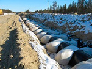 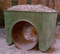 |
|
Контейнер текстильный КТ, ПТБК Контейнеры текстильные КТ, полимерконтейнеры текстильные бескаркасные типа ПТБК применяются для балластировки и защиты трубопроводов от всплытия в обводненных траншеях, болотах, заливаемых поймах рек.
Использование текстильных контейнеров при балластировке трубопроводов дает следующие преимущества перед железобетонными утяжелителями охватывающего типа:
— сокращение времени и себестоимости поставки за счет высокой производительности и возможности доставки автотранспортом большого количества изделий готовых к засыпке прямо на приобъектный склад или карьер;
— отсутствие необходимости использования футеровочных материалов необходимых для защиты наружной изоляции трубопровода.
Контейнеры текстильные КТ и полимерконтейнеры ПТБК заполняемые минеральным грунтом представляют собой две цилиндрические емкости, выполненные из высокопрочной и долговечной в грунтовых условиях технической ткани, которые соединены между собой поясом. Каждая емкость имеет горловину для наполнения минеральным грунтом без скальных пород, торфа и снега. Также на емкости вшиты монтажные петли необходимые в процессе наполнения и установки контейнера на трубопровод.
Основные технические характеристики: Маркировка Диаметр балластируемого трубопровода, мм Масса в воздухе, тн КТ-60 57-89 0,05 КТ-114 108-114 0,10 КТ-168 159-168 0,15 КТ-219 219-273 0,30 КТ-300, КТ-300Т 219-325 0,70 КТ-500, КТ-500Т 377-530 1,80 КТ-700, КТ-800 630-820 3,80 КТ-1000 1020 5,30 КТ-1200 1220 5,30 КТ-1400 1420 5,30 По желанию заказчика грунтозаполняемые контейнеры КТ, ПТБК могут быть изготовлены для любого диаметра трубопровода, а также с различной массой в воздухе.
Контейнеры текстильные КТ и полимерконтейнеры типа ПТБК изготавливаются в соответствии с ТУ 102-588-91, ТУ 102-589-91, ТУ 102-590-91, ТУ 102-591-91, ТУ 102-592-91, ТУ 102-593-91, ТУ 4834-010-01297858-2006, ОТТ-75.180.00-КТН-045-11, ТУ 4834-004-89632342-2010. |
|
Устройства ПКБУ, ПКБУ-МК, ПКБУ-МКС Полимерно-контейнерные балластирующие устройства ПКБУ, ПКБУ-МК и ПКБУ-МКС применяются для балластировки и защиты линейной части трубопровода от всплытия в обводненной и заболоченной местности.
Использование устройств ПКБУ, ПКБУ-МК и ПКБУ-МКС при балластировке трубопроводов дает следующие преимущества перед железобетонными утяжелителями охватывающего типа:
— сокращение времени и стоимости поставки за счет высокой производительности и возможности доставки автотранспортом большого количества изделий в разборном виде непосредственно на приобъектный склад или карьер;
— отсутствие контакта каркасно-опорных рам с наружной изоляции трубопровода в процессе установки и эксплуатации (является конструктивной особенностью только устройств ПКБУ-МК и ПКБУ-МКС).
Полимерно-контейнерные устройства ПКБУ, ПКБУ-МК и ПКБУ-МКС заполняемые сыпучим минеральным грунтом представляют собой два навесных емкостных контейнера, выполненные из высокопрочной и долговечной технической ткани. Контейнеры соединены между собой силовыми поясами, во внутрь каждой емкости установлена каркасная силовая рама.
Основные технические характеристики: Маркировка Диаметр балластируемого трубопровода, мм Объем грунта на 1 шт., м3 ПКБУ-377, ПКБУ-МК-377 325-426 1,4 ПКБУ-530, ПКБУ-МК-530 530 3,5 ПКБУ-720, ПКБУ-МК-720 720 4,0 ПКБУ-820, ПКБУ-МК-820 820 4,6 ПКБУ-1020, ПКБУ-МК-1020 1020 5,0 ПКБУ-1220, ПКБУ-МК-1220 1220 6,0 ПКБУ-1420, ПКБУ-МК-1420 1420 8,0 ПКБУ-МКС-377 325-426 3,0 ПКБУ-МКС-530 530 7,0 ПКБУ-МКС-720 720 9,6 ПКБУ-МКС-820 820 11,0 ПКБУ-МКС-1020 1020 12,0 ПКБУ-МКС-1220 1220 14,0 ПКБУ-МКС-1420 1420 16,0 По желанию заказчика грунтозаполняемые устройства ПКБУ, ПКБУ-МК и ПКБУ-МКС могут быть изготовлены для любого диаметра трубопровода, а также с различным объемом вмещаемого грунта.
Полимерно-контейнерные балластирующие устройства ПКБУ, ПКБУ-МК, ПКБУ-МКС изготавливаются в соответствии с ТУ 2297-006-01297858-2004, ОТТ-75.180.00-КТН-045-11, ТУ 4834-121-31323949-2004, ТУ 4834-1002-17179339-2005.Полимерно-контейнерные балластирующие устройства ПКБУ, ПКБУ-МК и ПКБУ-МКС применяются для балластировки и защиты линейной части трубопровода от всплытия в обводненной и заболоченной местности.
Использование устройств ПКБУ, ПКБУ-МК и ПКБУ-МКС при балластировке трубопроводов дает следующие преимущества перед железобетонными утяжелителями охватывающего типа:
— сокращение времени и стоимости поставки за счет высокой производительности и возможности доставки автотранспортом большого количества изделий в разборном виде непосредственно на приобъектный склад или карьер; — отсутствие контакта каркасно-опорных рам с наружной изоляции трубопровода в процессе установки и эксплуатации (является конструктивной особенностью только устройств ПКБУ-МК и ПКБУ-МКС).
Полимерно-контейнерные устройства ПКБУ, ПКБУ-МК и ПКБУ-МКС заполняемые сыпучим минеральным грунтом представляют собой два навесных емкостных контейнера, выполненные из высокопрочной и долговечной технической ткани. Контейнеры соединены между собой силовыми поясами, во внутрь каждой емкости установлена каркасная силовая рама.
Основные технические характеристики: Маркировка Диаметр балластируемого трубопровода, мм Объем грунта на 1 шт., м3 ПКБУ-377, ПКБУ-МК-377 325-426 1,4 ПКБУ-530, ПКБУ-МК-530 530 3,5 ПКБУ-720, ПКБУ-МК-720 720 4,0 ПКБУ-820, ПКБУ-МК-820 820 4,6 ПКБУ-1020, ПКБУ-МК-1020 1020 5,0 ПКБУ-1220, ПКБУ-МК-1220 1220 6,0 ПКБУ-1420, ПКБУ-МК-1420 1420 8,0 ПКБУ-МКС-377 325-426 3,0 ПКБУ-МКС-530 530 7,0 ПКБУ-МКС-720 720 9,6 ПКБУ-МКС-820 820 11,0 ПКБУ-МКС-1020 1020 12,0 ПКБУ-МКС-1220 1220 14,0 ПКБУ-МКС-1420 1420 16,0 По желанию заказчика грунтозаполняемые устройства ПКБУ, ПКБУ-МК и ПКБУ-МКС могут быть изготовлены для любого диаметра трубопровода, а также с различным объемом вмещаемого грунта.
Полимерно-контейнерные балластирующие устройства ПКБУ, ПКБУ-МК, ПКБУ-МКС изготавливаются в соответствии с ТУ 2297-006-01297858-2004, ОТТ-75.180.00-КТН-045-11, ТУ 4834-121-31323949-2004, ТУ 4834-1002-17179339-2005. |
|
Полимерные утяжелители ПКУ, УБП Пластиковые утяжелители типа ПКУ и УБП применяются для балластировки и проектного позиционирования линейной части трубопровода в водонасыщенной и заболоченной местности.
Использование полимер-контейнерных утяжелителей ПКУ и УБП при балластировке трубопроводов дает следующие преимущества перед железобетонными утяжелителями охватывающего типа:
— сокращение времени и затрат на поставку за счет компактного размещения в автотранспорте большого количества готовых изделий, которые доставляются до объекта строительства;
— отсутствие необходимости использования футеровочных материалов необходимых для защиты наружной изоляции трубопровода.
Утяжелитель балластировочный пластиковый УБП (ПКУ) представляет собой конструкцию с двумя коробчатыми емкостями из стеклопластика. Емкости имеют отверстия для дренирования. Утяжелитель может заполнятся непосредственно на трубопроводе любым грунтом и щебнем.
Основные технические характеристики: Маркировка Диаметр балластируемого трубопровода, мм Объем грунта на 1 шт., м3 ПКУ-110, УБП-110 89-168 0,04 ПКУ-225, УБП-225 219-273 0,10 ПКУ-325, УБП-325 325 0,18 ПКУ-426, УБП-426 426 0,20 ПКУ-530, УБП-530 530 0,25 ПКУ-720, УБП-720 720 0,65 ПКУ-820, УБП-820 820 0,71 ПКУ-1020, УБП-1020 1020 0,86 ПКУ-1220, УБП-1220 1220 1,60 ПКУ-1420, УБП-1420 1420 1,83 По желанию заказчика полимерные контейнерные утяжелители типа ПКУ и УБП могут быть изготовлены для любого диаметра трубопровода, а также с различным объемом вмещаемого грунта.
Полимерные (пластиковые) контейнерные утяжелители типа ПКУ и УБП изготавливаются в соответствии с ТУ 2296-268-24046478-98, ТУ 2296-001-00158631-97. |
|
Утяжелители ж/б УБО, УБОм, БУОТ, УБП Обозначения маркировки:
УБО – утяжелитель бетонный охватывающий.
УБОм – утяжелитель бетонный охватывающий модернизированный.
БУОТ – балластирующее устройство охватывающего типа.
УБП — утяжелитель бетонный поясной.
Железобетонные утяжелители УБО, УБОм, БУОТ, УБП применяются для балластировки трубопровода при прокладке через водные преграды, поймы рек, болота и обводненные территории.
Комплект бетонных утяжелителей УБО, УБОм, БУОТ, УБП представляет собой два армированных железобетонных блока с монтажными петлями и крепежными крюками. Для крепления и позиционирования утяжелителей используют мягкие силовые пояса. Для защиты изоляционного покрытия трубопровода в процессе установки и эксплуатации используют защитные коврики из скального листа или футеровочные маты из нетканого синтетического материала.
Основные технические характеристики: Маркировка Диаметр балластируемого трубопровода, мм Масса комплекта, тн УБП-0,3 273-325 0,45 УБП-0,4 377-426 0,63 УБП-0,5 426-530 0,80 УБП-0,7 630-720 1,70 УБО (УБОм, БУОТ)-530 530 0,83 УБО (УБОм, БУОТ)-720 (820, 1020) 720-1020 3,36 УБО (УБОм, БУОТ)-1220 1220 4,23 УБО (УБОм, БУОТ)-1420 1420 4,30 Утяжелители железобетонные охватывающего типа УБО, УБОм, БУОТ, УБП изготавливаются в соответствии с ТУ 102-300-81, ТУ 51-04-97, ОТТ-75.180.00-КТН-047-11. |
|
Мягкий силовой пояс МСП Мягкие силовые пояса применяются в качестве соединительных и силовых элементов, удерживающих в процессе эксплуатации бетонные утяжелители охватывающего типа БУОТ, УБО, УБОм, УБП.
Мягкий силовой соединительный пояс МСП представляет собой текстильную ленту с петлями на концах выполненную из полимерных технических тканей, которая обладает необходимой прочностью, химической стойкостью и долговечностью.
Основные технические характеристики: Маркировка Диаметр балластируемого трубопровода, мм Длина пояса, мм Ширина пояса, мм МСП-273 273 500 70 МСП-325 325 600 70 МСП-426 426 800 100 МСП-530 530 1100 100 МСП-720 720 1400 150 МСП-820 820 1500 150 МСП-1020 1020 1900 150 МСП-1220 1220 2100 150 МСП-1420 1420 2350 150 Мягкие силовые пояса МСП изготавливаются в соответствии с ТУ 102-300-81, ТУ 51-35197364-77-2001, ТУ 51-31323949-77-2001. |
|
Утяжелители ж/б УТК, КБУ Обозначения маркировки: УТК — утяжелитель кольцевого типа. КБУ – кольцевое балластирующее устройство. Утяжелители железобетонные типа УТК, КБУ применяются для балластировки трубопровода при прокладке методом протаскивания или сплава на переходах через реки, озера, болота. Комплект кольцевых утяжелителей УТК, КБУ представляет собой два армированных железобетонных полукольца с монтажными петлями, крепежными отверстиями и деталями для соединения полуколец при сборке на трубопроводе. Для защиты изоляционного покрытия трубопровода в процессе установки и эксплуатации используют скальный лист. Для плотного прилегания утяжелителей к поверхности трубопровода используют уплотнительные коврики из скального листа, рейку футеровочную или полимерный профиль. |
|
Утяжелители чугунные УЧК, ЧБУ Обозначения маркировки:
УЧК — утяжелитель чугунный кольцевой.
ЧБУ – чугунное балластирующее устройство.
Утяжелители чугунные (пригрузы) УЧК, ЧБУ применяются для балластировки трубопровода при прокладке по дну рек, озер, в болотах.
Комплект чугунных кольцевых утяжелителей УЧК, ЧБУ представляет собой два чугунных полукольца с монтажной петлей, крепежными отверстиями и деталями для соединения полуколец при сборке на трубопроводе. Для защиты изоляционного покрытия трубопровода в процессе установки и эксплуатации используют скальный лист. Для плотного прилегания утяжелителей к поверхности трубопровода используют уплотнительные коврики из скального листа, рейку футеровочную или полимерный профиль.
Основные технические характеристики: Маркировка Диаметр балластируемого трубопровода, мм Масса комплекта, тн УЧК-159, ЧБУ-159 159 0,10 УЧК-219, ЧБУ-219 219 0,15 УЧК-273, ЧБУ-273 273 0,20 УЧК-325, ЧБУ-325 325 0,25 УЧК-377, ЧБУ-377 377 0,30 УЧК-426, ЧБУ-426 426 0,35 УЧК-530, ЧБУ-530 530 0,45 УЧК-630, ЧБУ-630 630 0,50 УЧК-720, ЧБУ-720 720 1,10 УЧК-820, ЧБУ-820 820 1,10 УЧК-1020, ЧБУ-1020 1020 1,10 УЧК-1220, ЧБУ-1220 1220 2,00 УЧК-1420, ЧБУ-1420 1420 2,20 Утяжелитель чугунный кольцевой УЧК, чугунное балластирующее устройство ЧБУ изготавливаются в соответствии с ОТТ-75.180.00-КТН-046-11, ТУ 4834-009-00221451-2007, ТУ 4834-004-89632342-2012. |